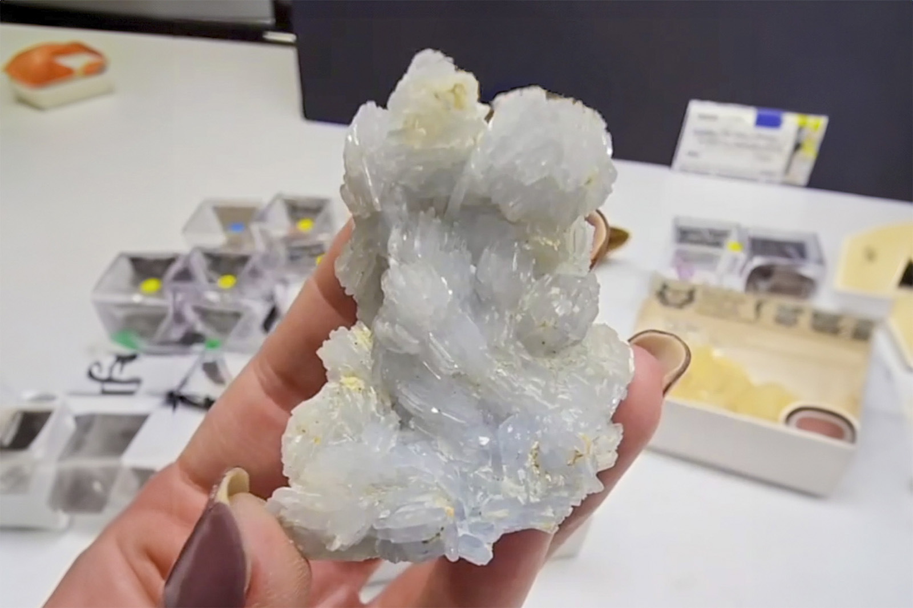

Barite
"Pale Blue Barite"
VI-09947
Austin, Travis County, TX
Purchased 3/29/2026 from Barnett Fine Minerals for $25.37
Core Collection • In Collection
Details
Storage Type: Flat
Storage Location: 000 Unassigned
Size class: TBD (0)
Dimensions: Unrecorded
Mass: Unrecorded
Luster: Unrecorded